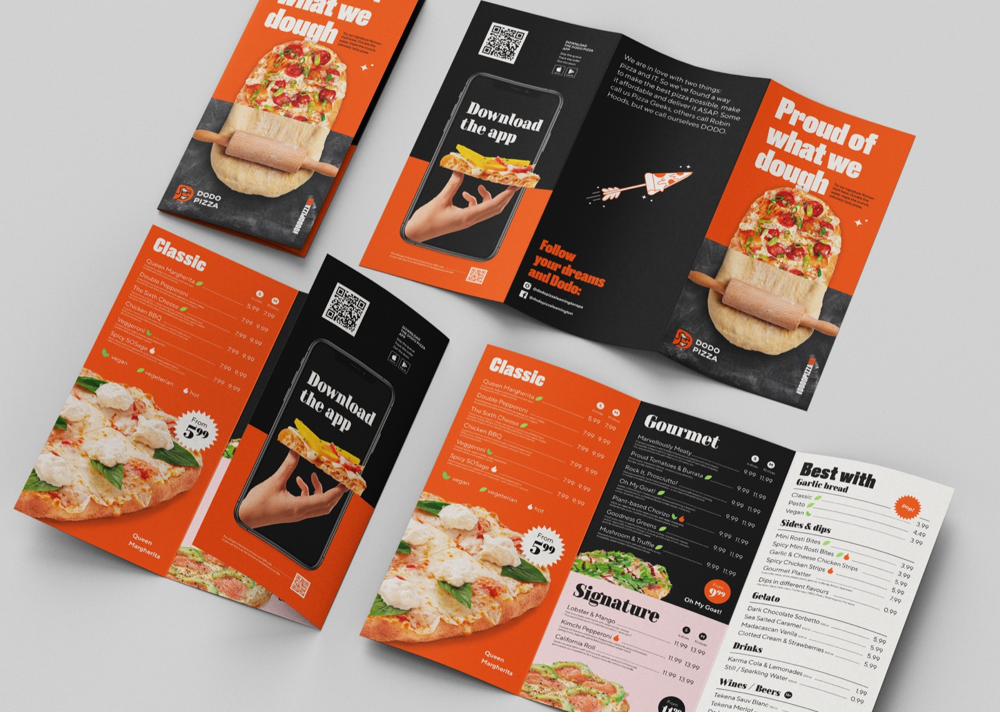
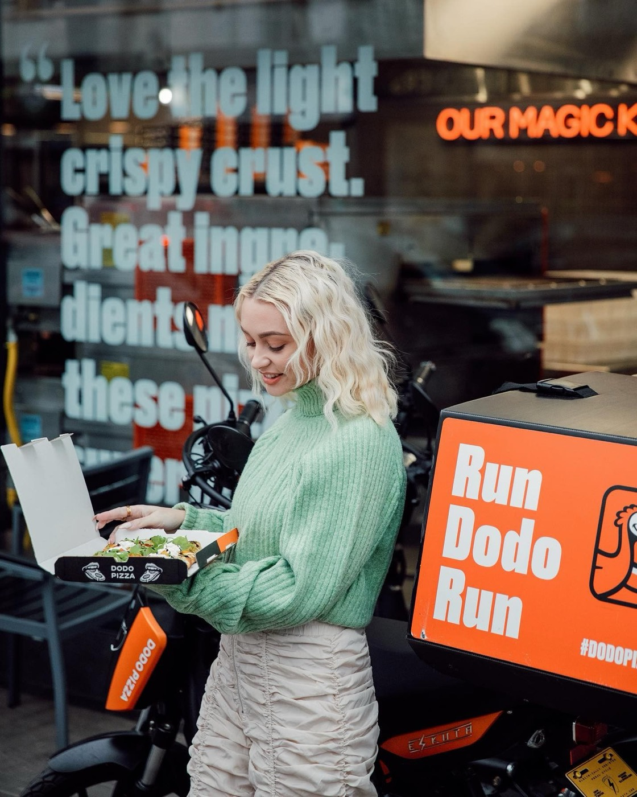
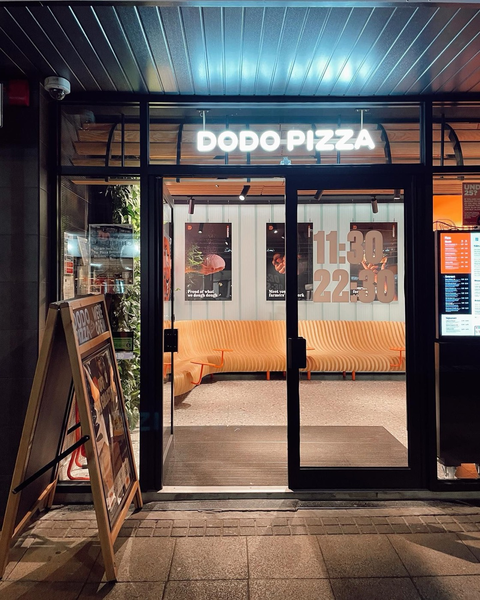
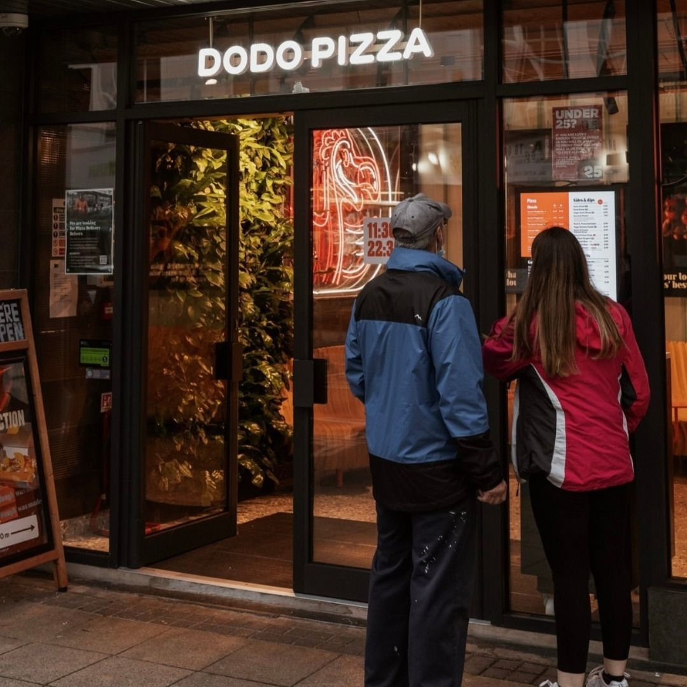
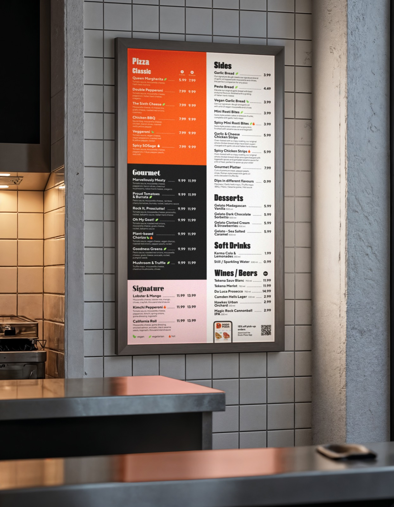
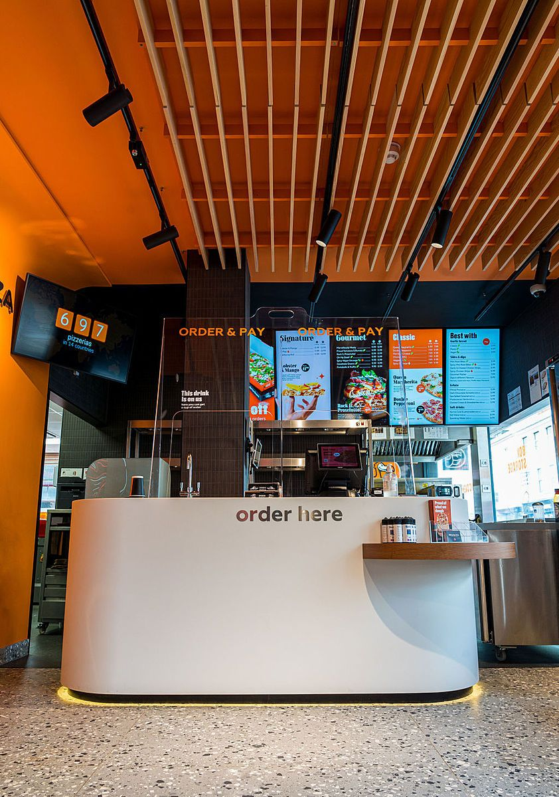
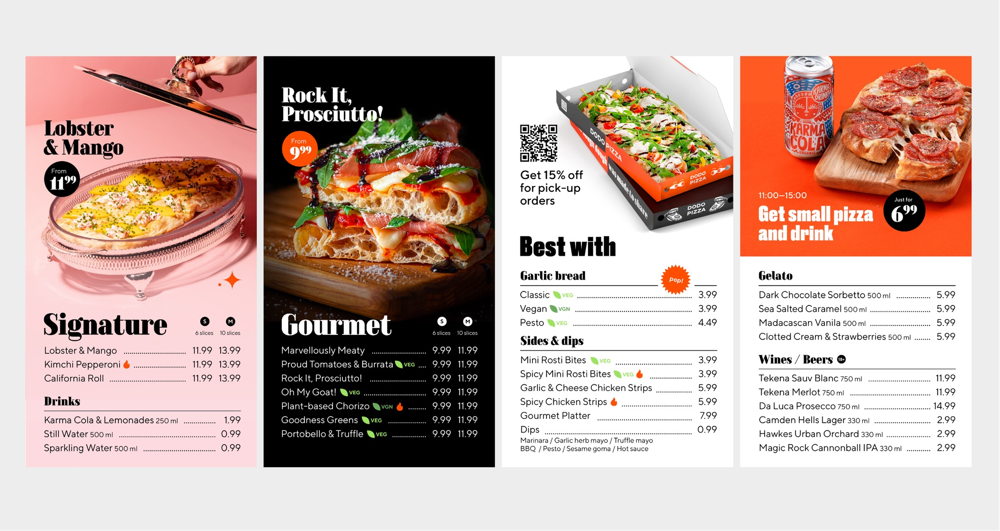
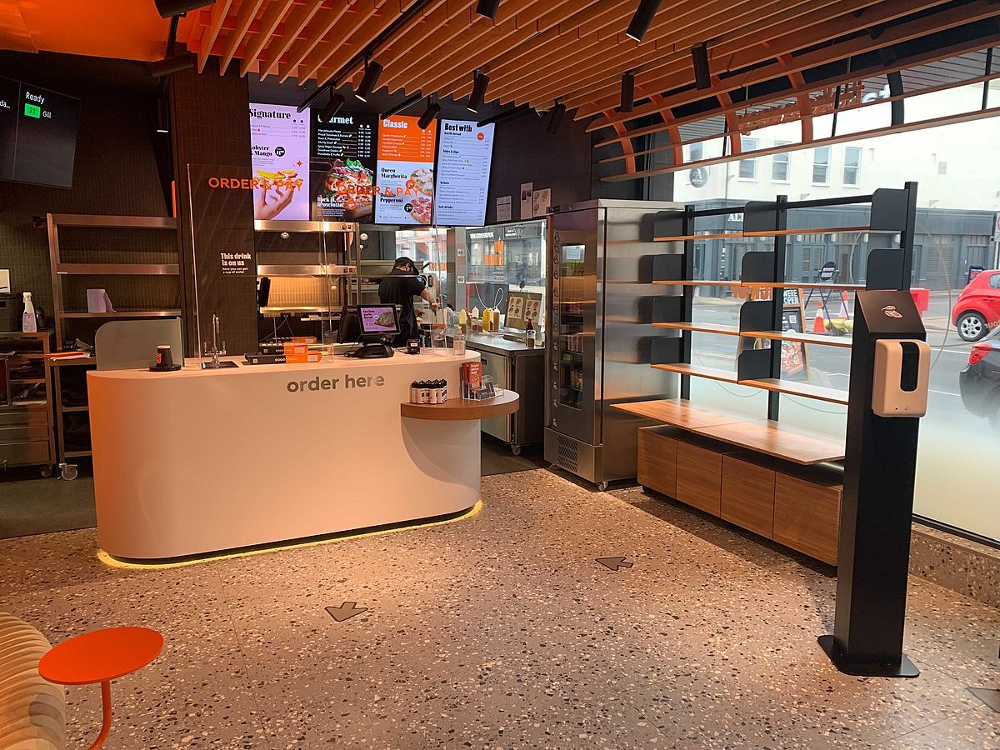

About the project
As an in-house designer at Dodo Pizza UK, I was responsible for translating the brand system into a wide range of restaurant assets, including digital menus, leaflets, stickers, and other printed materials. My focus was on adapting brand elements with care and ensuring visual consistency across all customer touchpoints, maintaining both functionality and a strong, unified identity.
- Creative DirectionConceptualized playful, family-friendly visual style.
- Art DirectionLed full photoshoot, model coordination, and retouch team.
- Design ProductionCreated digital and print-ready materials for restaurant needs.



Final Assets
- 01Digital menu for TV-Boards, side & print menu
- 02In-store stickers for doors and floor
- 03Leaflets and brochures for promotions





Credits
- Company
- Dodo Pizza
2021 - Role
- Art director
Graphic Designer - In collaboration with
- Restaurant Team
Marketing Team